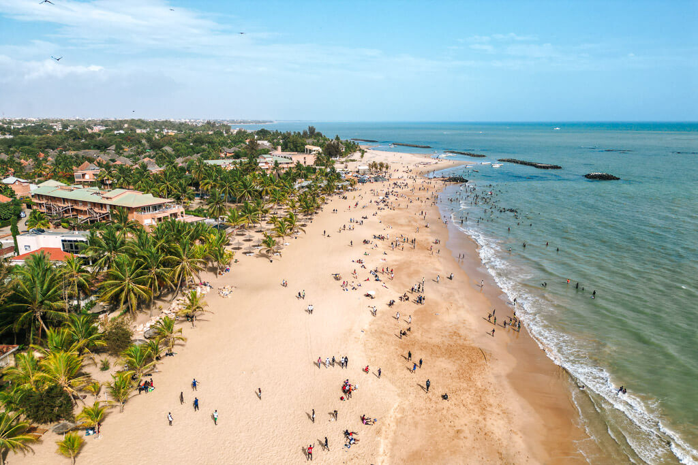

Station
« La première station balnéaire du Sénégal »
Saly Portudal — la pionnière
Département de Mbour · à 80 km de Dakar
Première station balnéaire du Sénégal, Saly Portudal est née dans les années 1970 d'un projet visionnaire de développement touristique. Aujourd'hui référence en Afrique de l'Ouest, elle accueille des visiteurs du monde entier.
Au programme : plages aménagées et surveillées, sports nautiques (jet-ski, kitesurf, voile), golf 18 trous en bord de mer, marchés artisanaux, restaurants et bars en bord de plage — un condensé de l'art de vivre balnéaire.
1970sAménagement
18 trousGolf de Saly
MultiplesHôtels & clubs